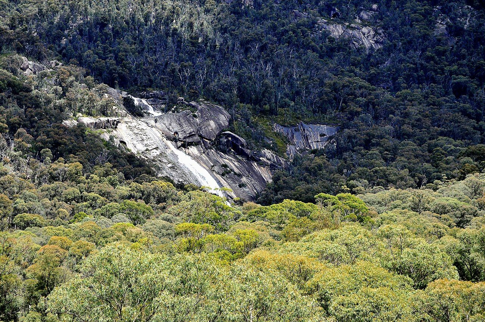
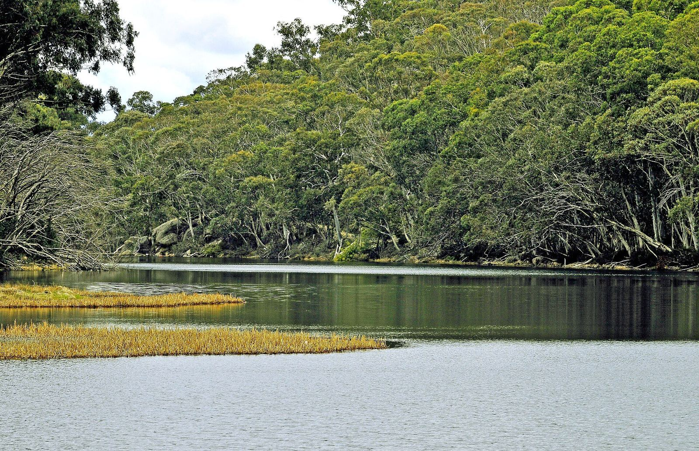
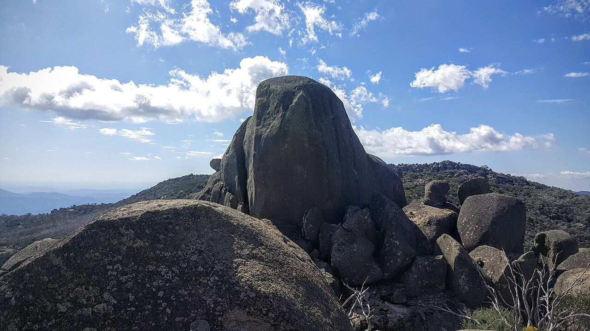
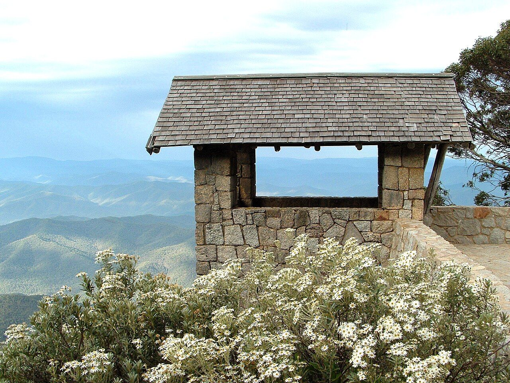
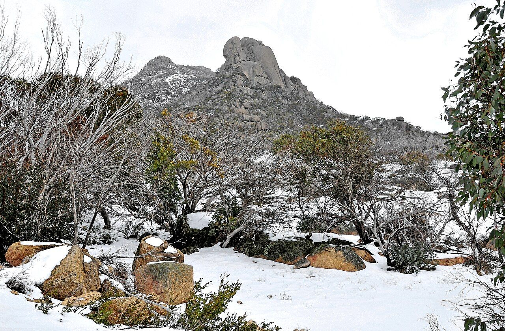

The only road up Mount Buffalo starts in Porepunkah, a few minutes from our gate. Within the hour you can be standing on granite looking down into the Gorge, swimming in an alpine lake, or pulling a toboggan through the snow.
What it is
Mount Buffalo National Park is a high granite plateau, looked after by Parks Victoria. It's one of Victoria's oldest parks: the area around the Gorge was first set aside in 1898, after visitors started coming up in the 1880s. It's still the granite that people come for: huge boulders, sheer cliffs and tors with names like the Horn and the Monolith.
There's no entry fee. The road up is sealed but winding, with tight corners, and isn't suitable for large caravans, so leave yours at the cottage.

Getting there from here
Head into Porepunkah and turn off the Great Alpine Road onto the Mount Buffalo Road. Snow play is about 40 minutes from the cottages. From the Eurobin Creek picnic area near the bottom, it's 18 km of climbing to the Gap. From there it's 3 km to the Gorge and the old Chalet, or 8 km to Cresta Valley, past Lake Catani and Dingo Dell. The last stretch on to the Horn is gravel.
Fill up with fuel and pack lunch, water and a warm layer before you go. Food on the mountain is limited, and it's always cooler on top than down here by the river.


A day on the mountain
In summer, stop on the way up for the short walk to Ladies Bath Falls and Eurobin Falls. At the top, walk the Gorge Heritage Walk and the lookouts, then drive on to Lake Catani for lunch, a swim and a paddle. Finish with the short climb up the Horn for the view across the Alps. Lake Catani campground is open from November to April if you'd like to stay a night on top.
In winter, Dingo Dell and Cresta Valley are the places for tobogganing and building a snowman, when there's enough snow. There's no toboggan or snow-wear hire on the mountain, so hire in town on the way, or bring your own plastic toboggan. The Dingo Dell café opens when the toboggan run is open.


Useful links
- Mount Buffalo National Park, Parks Victoria: maps, walks and current alerts
- Dingo Dell snow play, Parks Victoria: whether it's open
- Visit Mount Buffalo: local visitor information, road distances and snow play
- Mount Buffalo Chalet: café opening days
Top photo: LBM1948, CC BY-SA 4.0, via Wikimedia Commons.